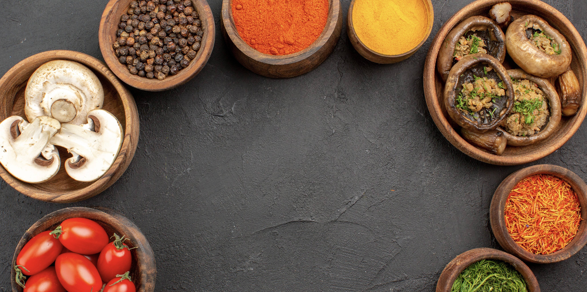

Mulai dari bahan di dapur.
Temukan resep dari satu bahan utama, atau jelajahi kategori masakan.
Resep dan gambar hasil pencarian berasal dari TheMealDB (tab baru). Bahasa resep mengikuti sumbernya.

Cari dari bahan utama
Gunakan satu bahan per pencarian. Contoh: tomato, chicken breast, atau rice.
Jelajahi kategori
Mengambil daftar kategori…
Resep untuk dicoba
Cari satu bahan atau pilih kategori untuk melihat resep.